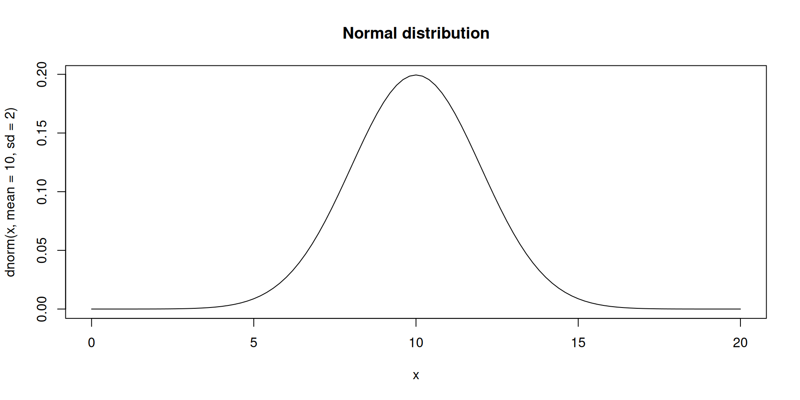

library(ggplot2)
library(knitr)
theme_set(theme_minimal(base_size = 16))
curve(
dnorm(
x,
mean = 10,
sd = 2
),
from = 0,
to = 20,
main = "Normal distribution"
)Advanced Statistics Lab
Optimization asked:
\[ \widehat{\theta} = \operatorname*{arg\,min}_{\theta} f(\theta) \]
Maximum likelihood chooses \(f(\theta)\) from a probability model.
For independent observations:
\[ L(\theta; \mathbf{y}) = \prod_{i=1}^{n} p(y_i \mid \theta) \]
\[ \log L(\theta; \mathbf{y}) = \sum_{i=1}^{n} \log p(y_i \mid \theta) \]
optim() minimizes.
So we return the negative log-likelihood:
\[ -\sum_{i=1}^{n} \log p(y_i \mid \theta) \]
\[ f(y) = \frac{1}{\sigma \sqrt{2\pi}} \exp\left[-\frac{1}{2}\left(\frac{y - \mu}{\sigma}\right)^2\right] \]

lik <- function(par, y) {
L2 <- corlik(par[5])
L3 <- varlik(par[3])
L4 <- varlik(par[4])
if (!all(is.finite(c(L2, L3, L4)))) return(Inf)
covAB <- par[5] * (sqrt(par[3]) * sqrt(par[4]))
sigma <- array(c(par[3], covAB, covAB, par[4]), dim = c(2, 2))
L1 <- tryCatch(
dmvnorm(x = y, mean = c(par[1], par[2]), sigma = sigma, log = TRUE),
error = function(e) -Inf
)
if (!all(is.finite(L1))) return(Inf)
return(-sum(L1 + L2 + L3 + L4))
}methods = c("Nelder-Mead", "BFGS", "CG", "L-BFGS-B", "SANN", "Brent")
p <- c(0, 0, 1, 1, 0.2)
names(p) <- c("mu1", "mu2", "tauA", "tauB", "rho")
set.seed(2026)
n = 10
tauA <- 3
tauB <- 10
rho = 0.7
covAB <- rho * (sqrt(tauA) * sqrt(tauB))
muA <- 5
muB <- 20
sigma <- array(c(tauA, covAB, covAB, tauB), dim = c(2, 2))
Y <- rmvnorm(n, c(muA, muB), sigma)
ML <- optim(p, lik, y = Y, method = methods[1])
res <- as.list(ML$par)
res$covAB <- res$rho * (sqrt(res$tauA) * sqrt(res$tauB))out <- rbind(
unlist(res),
c(colMeans(Y), var(Y[, 1]), var(Y[, 2]), cor(Y)[1, 2], cov(Y)[1, 2])
)
colnames(out) <- names(res)
rownames(out) <- c("ML", "empirical")
out mu1 mu2 tauA tauB rho covAB
ML -22.484565 7.335499 70.379671 14.028532 0.8906419 27.985487
empirical 4.069481 18.482726 1.771725 9.252332 0.5003696 2.025885\[ \mathbf{y} = \mathbf{X}\mathbf{b} + \mathbf{a} + \mathbf{e} \]
\[ \mathbf{y} \sim MVN(\mathbf{X}\mathbf{b}, \mathbf{A}\sigma_a^2 + \mathbf{I}\sigma_e^2) \]
set.seed(2026)
n_animals <- 20
A <- diag(n_animals)
A[1, 2] <- A[2, 1] <- 0.5
A[3, 4] <- A[4, 3] <- 0.5
A[5, 6] <- A[6, 5] <- 0.25
X <- matrix(1, n_animals, 1)
b <- 30
var_a <- 4
var_e <- 9
a <- as.numeric(rmvnorm(1, mean = rep(0, n_animals), sigma = A * var_a))
y <- as.numeric(X %*% b + a + rnorm(n_animals, sd = sqrt(var_e)))lik <- function(par, y, X, A) {
L2 <- varlik(par[1])
L3 <- varlik(par[2])
if (!all(is.finite(c(L2, L3)))) return(Inf)
b <- matrix(c(par[3:(2 + ncol(X))]), ncol = 1)
G <- A * par[2]
R <- diag(length(y)) * par[1]
V <- G + R
mu <- X %*% b
L1 <- tryCatch(
dmvnorm(x = y, mean = as.numeric(mu), sigma = V, log = TRUE),
error = function(e) -Inf
)
if (!all(is.finite(L1))) return(Inf)
return(-sum(L1 + L2 + L3))
}getp <- function(X, b = 0.1, var_e = 1, var_a = 1) {
p <- c(var_e, var_a, rep(b, ncol(X)))
names(p) <- c("var_e", "var_a", paste("b", 0:(ncol(X) - 1), sep = ""))
p
}
ML <- optim(getp(X, b = mean(y)), lik, X = X, A = A, y = y, method = methods[1])
rbind(
ML = ML$par,
true = c(var_e, var_a, b)
) var_e var_a b0
ML 8.290905 7.775783e-06 30.09605
true 9.000000 4.000000e+00 30.00000Maximum likelihood is not a new algorithm.
It is an optimization problem where the objective comes from a probability model.
The code pattern is:
p,lik(),optim(p, lik, ...).p.mu and sigma with n = 20.rho.A.